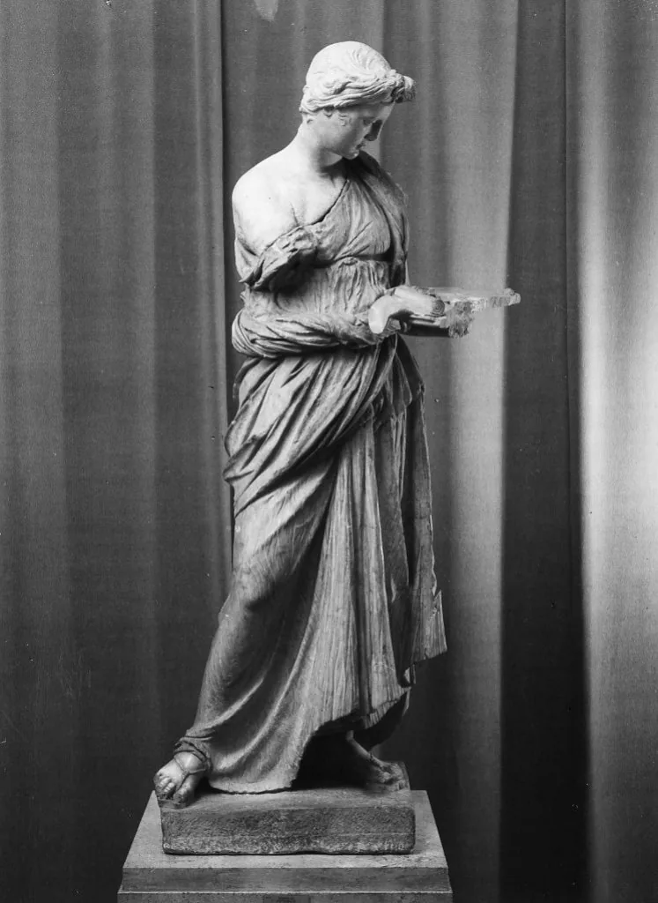
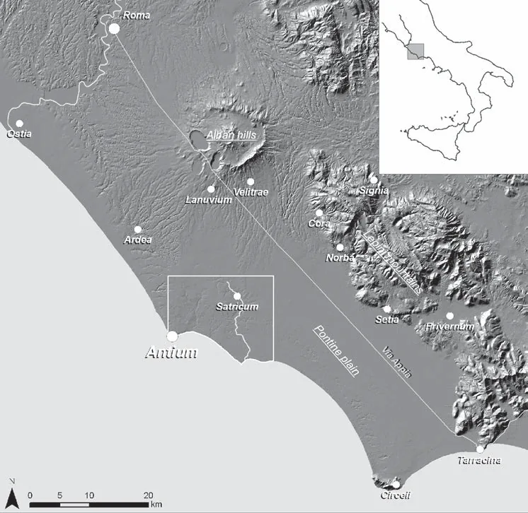
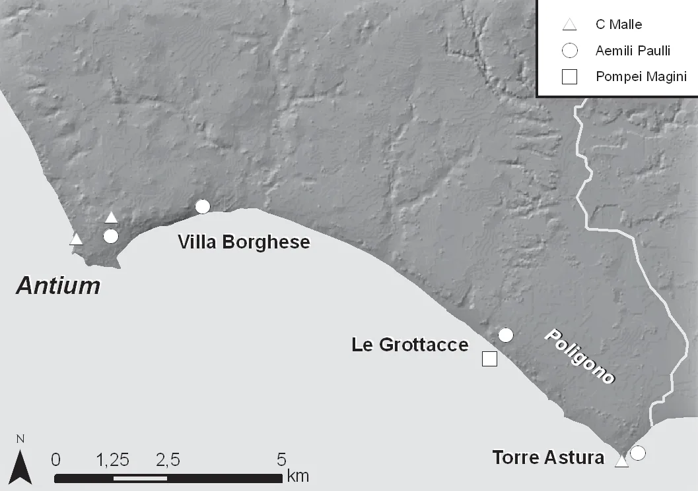
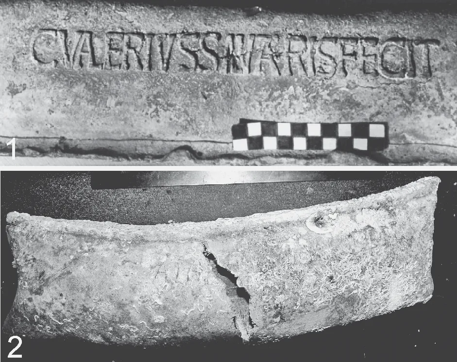

Antium, la città che la storia ricorda con il volto dei suoi nemici
Volsci, Coriolano, Cicerone e gli dèi di una capitale di mare, in dodici secoli di storia. Estratto commentato dal Tomo III di Giuseppe Rocco Vulpio S.J., De Antiatibus et Norbanis (Padova, 1726), integrato con la storiografia recente: Brandizzi Vittucci 2000, de Haas–Tol–Attema 2011, Soffredini 1879.
Il nome arrivato dopo
C’è una cosa strana, in Anzio. I Volsci, il popolo che per secoli portò la guerra a Roma proprio da questa costa, arrivarono quando la città esisteva già da secoli: la trovarono, la conquistarono, ne fecero la loro capitale sul mare. Non la fondarono loro. Eppure è con il loro volto che la storia la ricorda. È come se un luogo restasse legato per sempre a chi, di passaggio, un giorno lo conquistò.
Gli antichi, su chi avesse fondato Anzio, non erano d’accordo. Per i Greci l’aveva fondata Anteia, figlio nientemeno che di Ulisse e della maga Circe. Per altri era stata opera di Ascanio, il figlio di Enea. Altri ancora andavano sul concreto: il nome verrebbe da antrum, che vuol dire grotta, per le tane scavate nella roccia dai primi che abitarono questa costa.
E poi c’è un quarto nome, quasi dimenticato: Aphrodisium. Si racconta che Ascanio avesse costruito qui un tempio a Venere, sua antenata. In greco Venere è Afrodite, e Afrodite viene da aphrós, la spuma del mare. Un nome che dice tutto in una parola: una città di mare, dedicata alla dea nata dalle onde.

Una città, o due?
Tutti quei racconti danno per scontata una cosa sola: che Anzio sia sempre stata dove la vediamo oggi. Ma è proprio così? Nel 2000 l’archeologa Paola Brandizzi Vittucci ha rovesciato il tavolo. La sua idea: fino ai tempi di Nerone non c’era una Anzio, ce n’erano due. Una città «civile» sulla collina dove oggi sta il borgo di Nettuno; e una colonia più giovane, cresciuta intorno alla grande villa di Nerone, a Capo d’Anzio. Sarebbe stato Nerone, verso il 60 d.C., a spostare il cuore della città dalla vecchia collina al promontorio, costruendoci il porto e i palazzi.
La prova più forte sono le strade. Le tre grandi vie romane che le carte antiche disegnano non si incontrano a Capo d’Anzio. Si incontrano esattamente dove oggi sorge il borgo di Nettuno. E c’è un dettaglio che fa sorridere: in certe vecchie mappe l’attuale Piazza Mazzini di Nettuno si chiamava «Piazza dei Pozzi di grano». Il ricordo di quando Anzio campava di cereali, come dicono le fonti antiche.

Le fonti antiche parlano di un porto di nome Caenon, attaccato dai Romani nel 469 a.C. Brandizzi Vittucci propone di riconoscerlo in un grande bacino paludoso di forma circolare, che le carte storiche chiamano «Pantano», subito a ovest di Nettuno, all’altezza del fiume Loracina. Il nome torna: caenum, in latino, è il fango, la melma. Un’idea che seduce, ma per ora da dimostrare: in quell’area uno scavo sistematico non è mai stato fatto.
I Volsci e il mare
I Volsci erano un antico popolo italico, gente di montagna del Lazio meridionale. Gli storici romani li dipingono come combattivi e indomabili. Livio scriveva che erano «più bellicosi nel ribellarsi che nel condurre una guerra»: bravissimi a iniziare le ostilità, meno a portarle a termine.
Tra la fine del VI e l’inizio del V secolo a.C. occuparono mezzo Lazio costiero, e fecero di Anzio la loro capitale. I Romani la chiamavano caput Volscorum, la testa dei Volsci. Campavano di navigazione e, va detto, di pirateria, che secondo le fonti spingevano «fino al Mar Egeo». Una cosa importante da capire, perché spiega tutta la topografia della città: la Anzio fortificata stava sulla collina; il porto stava in basso, vicino al mare, fuori dalle mura. Due cose separate. Lo schema delle basi navali moderne: la flotta in un posto, la città in un altro, collegate da una strada.
Coriolano, l’ospite ucciso nel foro
Le guerre tra Roma e gli anziati durarono un secolo e mezzo. La storia più famosa è quella di Caio Marzio Coriolano, un nobile romano cacciato dalla sua città, che nel 489 a.C. si rifugiò ad Anzio presso un nobile del posto, Attio Tullio Aufidio. Coriolano convinse l’ospite a fare guerra a Roma, e le legioni volsche arrivarono a poche miglia dalle mura.
Roma giocò l’ultima carta: mandò avanti la madre di Coriolano, Veturia, con la moglie Volumnia. Le lacrime della madre convinsero il figlio a ritirare l’esercito. Per Coriolano fu la fine. Tornato ad Anzio, ormai Attio Tullio lo vedeva come un rivale pericoloso. Lo fece accusare di tradimento e uccidere nel foro della città. Ma il finale ha una piega che non ti aspetti: gli stessi anziati, pentiti del delitto, gli resero onore. Dionigi racconta che «portarono il corpo con grandissimi onori ed eressero un monumento insigne nel centro del foro di Anzio, nel luogo stesso dove era caduto, ornandolo con le armi e le spoglie del guerriero». Chi cerca il foro di Antium cerca anche la tomba di Coriolano: gli studiosi del Sei e Settecento la mettevano nella vallata tra Villa Sarsina, oggi il Municipio, e Villa Albani.
Una parte degli storici dubita che Coriolano sia mai esistito. Il suo nome non compare nell’elenco ufficiale dei magistrati romani di quegli anni, e Dionigi ammette che ai suoi tempi era cantato nei canti popolari dei Volsci: segno che la figura potrebbe essere nata come eroe della tradizione orale. Il monumento descritto da Dionigi non è mai stato trovato. Niente di tutto questo basta a dire che Coriolano non sia esistito: ma quando una storia passa di bocca in bocca per secoli prima di essere scritta, il vero e il narrato si mescolano fino al punto che non sappiamo più separarli.
La fine, e i rostri portati a Roma
La fine arrivò nel 338 a.C., nella grande Guerra Latina. La battaglia decisiva si combatté lungo il fiume Astura. Per Anzio fu durissima: la flotta in parte distrutta, in parte portata via verso i porti di Roma. Agli anziati fu vietato l’uso del mare, un colpo mortale per una città che viveva di commercio e navigazione. E poi un gesto che era insieme bottino e umiliazione: i rostri, gli speroni di bronzo sulla prua delle navi, furono staccati e portati a Roma per ornare la tribuna degli oratori nel Foro: le Rostra. Il trionfo del console Menio finì negli annali ufficiali:
Roma cancellò la vecchia Anzio e la rifece a sua immagine: una nuova colonia di cittadini romani, con i vecchi anziati superstiti iscritti nelle tribù Mecia e Scapzia, e di lì a poco il rango di municipio. Le navi migliori risalirono il Tevere fino agli arsenali di Roma, formando il primo nucleo della marina militare romana. Plinio il Vecchio scrisse che quei rostri «ornavano il Foro come una corona conferita al Popolo Romano». Intorno al 470 d.C., oltre ottocento anni dopo, un prefetto allungò quella stessa tribuna per festeggiare una vittoria contro i Vandali.
Le famiglie di Anzio che fecero fortuna a Roma
La cittadinanza romana ebbe una conseguenza che di solito non si racconta: aprì ai figli di Anzio le carriere politiche e intellettuali nella capitale. Tre famiglie devono ad Anzio l’origine, e a Roma la fama. Gli Anzi presero il nome dalla città natale: da loro venne Valerio Anziate, lo storico che Tito Livio usò per ricostruire i primi secoli di Roma. Gli Aufidi, che la tradizione faceva risalire ad Attio Tullio, diedero due grandi giuristi della tarda Repubblica. E poi gli Antistii, da non confondere con gli Anzi, che diedero a Roma il giurista più importante del primo Impero: Marco Antistio Labeone, che rifiutò il consolato che Augusto in persona gli offriva. Cinque secoli dopo la sua morte, le sue opinioni di diritto venivano ancora citate nei tribunali dell’Impero d’Oriente.
L’Anzio di Cicerone
La voce più viva su Anzio nel I secolo a.C. è quella di Cicerone. Dalle lettere all’amico Attico sappiamo che amava stare qui più che in qualsiasi altro posto. La chiamò municipium honestissimum, una cittadina perbene, e arrivò a preferirla a Roma:
Per dire allo stesso Attico quanto contasse Anzio, scelse il paragone che l’amico avrebbe capito meglio: la cittadina dell’Epiro dove Attico possedeva terre e a cui era legatissimo.
Era ossessionato dalla sua biblioteca anziate: si fece mandare perfino due archivisti di mestiere. Un dettaglio prezioso esce dalle sue parole: descrive la villa «dentro la città fortificata», e spiega ad Attico come arrivarci «dalla strada dritta ai giardini». Vuol dire che a metà del I secolo a.C. Anzio era ancora una città murata, con il vecchio vallo volsco ancora lì a fare da confine. La casa passò poi a Lepido, il futuro triumviro. E pure Bruto e Cassio, dopo aver pugnalato Cesare, andarono dritti ad Anzio ad aspettare gli sviluppi.
La città dei Cesari: teatro, circo, terme
Da Augusto in poi, Anzio diventò il posto dove gli imperatori venivano a riposare e a divertirsi. Tiberio celebrò qui le nozze del futuro Caligola. Caligola ci nacque, e secondo Svetonio amò Anzio più di ogni altro luogo, al punto che si era sparsa la voce che volesse trasferirci la capitale dell’Impero. Nerone ci nacque, e ci tornò sempre: stava villeggiando proprio qui quando Roma bruciava.
C’era un teatro, vicino al tempio di Apollo, e Nerone non si vergognava di salirci sopra a recitare e cantare di persona. C’era un circo antichissimo, che Nerone rese famoso con giochi annuali. Le portici intorno al circo furono dipinte, da un liberto di Nerone, con i ritratti dal vero di tutti i gladiatori: facce, armi, attrezzi del mestiere, come la celebre stoà di Atene era dipinta con la battaglia di Maratona. E c’erano le terme, alimentate da una sorgente di acqua calda detta il Caldano, restaurate ancora in piena età tardo-imperiale.
Scavando ad Anzio è saltata fuori una lastra di marmo con su scritto l’organico della villa imperiale. Nomi e mansioni: il maggiordomo, il giardiniere, il bibliotecario, il «custode delle Fortune», il cuoco dei brodi, lo stuccatore, il pavimentatore, l’addetto ai bronzi di Corinto, perfino chi teneva in ordine i giochi con la palla. La lastra dice che le spese erano approvate «per decreto dei decurioni»: la prova, scritta piccola in fondo a un elenco di servitù, che lì c’era davvero una città con i suoi magistrati. Recuperata grazie al cardinale Alessandro Albani, finì nella sua celebre raccolta.
La ricchezza veniva dalla campagna
Esci da Anzio romana e cammina verso l’interno: dopo poche centinaia di metri sei in mezzo ai campi, e i campi sono pieni di gente. Fattorie, poderi, grandi ville. Era questo l’agro di Antium: la campagna che dava da mangiare alla città, e che soprattutto la faceva ricca. Per molto tempo di questa campagna non si sapeva quasi niente; poi un gruppo di archeologi olandesi del Groningen Institute of Archaeology ha passato anni a setacciare i campi del territorio di Nettuno, raccogliendo cocci, contando muri, mappando ogni traccia. Al culmine, nel I secolo d.C., in quella campagna vivevano tra 1.700 e 2.300 persone; la città di Antium, intanto, era cresciuta fino a coprire 120 ettari, forse diecimila abitanti. Più di metà della popolazione viveva dentro la città: per il mondo antico è tantissimo.
Le ville sul mare erano anche fabbriche
C’è una parola che inganna: «villa». Oggi fa pensare a una casa di vacanza. Per i Romani ricchi era anche un’azienda. La villa di Le Grottacce, sulla costa a sud di Anzio, è il caso più chiaro: accanto alla parte signorile gli archeologi hanno trovato i resti di un’officina con migliaia di frammenti di anfore, scarti di fornace, tegole venute male. Lì dentro si fabbricavano contenitori per vino e, quasi certamente, olio. Poco lontano, vicino alla villa di Tor Caldara, si cavava zolfo dal terreno: lo dicono i tubi di terracotta e i grossi vasi forati ritrovati sul posto. E poi Torre Astura, la grande villa sul mare a sud, che si era costruita un porto tutto suo, così grande che difficilmente serviva solo agli ospiti di casa.

Il porto di Nerone, e il commercio che esplode
Verso l’inizio del I secolo d.C. il geografo Strabone scriveva una cosa strana per una città di mare: Anzio non aveva un vero porto. Poi arrivò Nerone. Fu lui, nella seconda metà del I secolo, a far costruire l’impianto portuale con i suoi due bacini, e l’archeologia conferma la data. Insieme al porto, la strada lastricata che da Anzio saliva verso la via Appia all’altezza di Lanuvio. Il risultato si legge nei cocci: da quel momento le ceramiche e le anfore d’importazione (vino, olio, sigillata africana) si moltiplicano anche nelle fattorie di campagna. Il porto trasformò una città di villeggiatura in uno snodo di traffici, capace di rifornire buona parte del Lazio a sud di Roma.
I padroni scritti sui mattoni
C’è un trucco che gli archeologi usano per sapere chi possedeva tutta questa roba: leggere i timbri. I produttori marchiavano tegole e tubature col proprio nome. Così, a duemila anni di distanza, da un mattone esce un cognome. E che cognomi: gli Aemilii Paulli, una delle famiglie più grandi di Roma (sette consoli tra il 302 a.C. e l’anno 1 d.C.), e i Pompei. Le fistulae di piombo dicono di più: mettere in casa un impianto idrico era un privilegio concesso dall’imperatore. Tra i nomi incisi sui tubi c’è anche un artigiano del posto, un certo Lucio Visullio Antiatino: quel soprannome dice che i tubi si fabbricavano lì, sul posto.

Tra i nomi sui tubi c’è quello di Tiberio Claudio Spiculo, un ex gladiatore diventato comandante della guardia a cavallo di Nerone, proprietario di una tenuta dalle parti di Anzio. Svetonio racconta che Nerone gli regalò beni e residenza «pari a quelli di uomini che avevano celebrato trionfi». Un uomo che aveva cominciato combattendo nell’arena per sopravvivere, finito padrone di un pezzo di costa imperiale. La colonia di veterani fondata da Nerone era fatta di gente così.
Per molto tempo si è scritto che Antium producesse garum, la salsa di pesce fermentato. La prova era una scritta dipinta su un’anfora. Peccato che quella scritta, riletta con attenzione, non parli di Antium ma di Antipolis: cioè dell’odierna Antibes, sulla costa francese. Due nomi simili, due città diverse. Il garum di Anzio va tolto dal racconto. Resta sicura la produzione di vino, attestata anche da un’anfora bollata datata al 93 a.C.
L’acquedotto, il santuario e il serpente
Cento anni prima di Cicerone, nel 171 a.C., un magistrato di nome Caio Lucrezio fece ad Anzio una cosa che contava davvero: un acquedotto che portava in città l’acqua del fiume Loracina. E con l’occasione arricchì il santuario di Esculapio, il dio della medicina, con preziose tavole dipinte, parte del bottino di una sua campagna in Macedonia. Il culto di Esculapio ad Anzio era considerato antichissimo: Ovidio racconta che durante la prima guerra punica una pestilenza colpì Roma, e che il serpente sacro di Epidauro, ritenuto il dio stesso, salì da solo sulla nave romana. Durante il ritorno l’unica tappa fu Anzio: il serpente saltò giù, andò al tempio di Esculapio anziate, si avvolse a una palma del cortile e ci restò tre giorni «come ospite».
Gli dèi di Antium
Il culto più importante era quello della Fortuna. Ma Anzio aveva una sua particolarità: la Fortuna qui non era una, era due. Lo dicono sia una moneta coniata sotto Augusto, sia un’iscrizione che dedica gli ex voto al plurale, «Alle Fortune Anziati». Da una parte la Fortuna Equestre (detta anche Virile o Forte), invocata dai soldati e dai cavalieri; dall’altra la Fortuna Muliebre, quella delle donne. Macrobio racconta che nel tempio i due simulacri venivano fisicamente mossi dai sacerdoti prima che i fedeli traessero le sorti. Orazio le dedicò un’ode famosa, O diva, gratum quae regis Antium…; quando Poppea stava per partorire, le immagini delle Fortune furono portate solennemente a Roma per propiziare il parto. E Augusto, durante la guerra civile, arrivò a prelevare una parte dei tesori del tempio per pagarsi le spese militari.
Svetonio racconta che pochi mesi prima di essere ucciso, Caligola fu avvertito dalle Sorti di Anzio di «guardarsi da un Cassio». Caligola lo prese alla lettera e fece imprigionare un tale Cassio Longino, perché aveva quel nome. Ma ignorò il vero pericolo: si chiamava Cassio anche il tribuno della guardia che pochi mesi dopo lo pugnalò. Le Sorti, come sempre negli oracoli antichi, avevano detto il vero. Solo, in modo abbastanza ambiguo da non servire a niente.
Accanto alla Fortuna, le iscrizioni raccontano un mondo religioso ricco e cosmopolita. Il tempio di Venere, attribuito ad Ascanio, restò in funzione fino in piena età imperiale. Sullo stesso litorale c’era un altare a Marte Vendicatore: Venere e Marte nello stesso recinto sacro. Tra il II e il III secolo d.C. arrivò ad Anzio anche Mitra, il dio persiano del sole vittorioso: lo attesta un’iscrizione che nomina un «araldo sacro del Dio Sole degli Anziati». I riti volevano il buio, e si svolgevano in grotte scavate nella roccia: il mitreo di Anzio doveva stare in qualche ambiente sotterraneo ancora oggi non trovato.
Dove stava il foro?
È la domanda che gli archeologi si fanno da sempre: dov’era la piazza principale di Antium? Seguendo il tracciato delle strade più antiche, si è notato che convergono tutte in una vallata precisa, quella tra l’altura di Villa Sarsina, l’attuale Municipio, e quella di Villa Albani. A rafforzarlo ci sono le costruzioni monumentali trovate sotto le case lì intorno, e la linea del circo che sfiora proprio quell’area. Villa Sarsina, il cuore del Municipio di oggi, potrebbe essere l’acropoli dell’antica città, forse con un tempio a Ercole. E se l’identificazione è giusta, è proprio in quella vallata che andrebbe messa anche la tomba di Coriolano.
Una cautela è d’obbligo quando si leggono i vecchi testi sull’archeologia anziate, e vale anche per le pagine di Volpi che stanno alla base di molte cose raccontate qui. Lo studio di Ginette Vagenheim ha dimostrato che gran parte delle iscrizioni che l’antiquario rinascimentale Pirro Ligorio attribuiva ad Anzio e Nettuno sono falsi: Ligorio aveva la cattiva abitudine di «completare» le sue conoscenze inventando iscrizioni plausibili. Quelle false sono catalogate come non autentiche nelle grandi raccolte epigrafiche. La regola, per gli studiosi come per i visitatori, è semplice: non tutto quello che è scritto nelle vecchie guide è davvero scolpito nella pietra.
Le magistrature di Antium e il metodo di Vulpio
Antium ebbe tre distinte epoche istituzionali. Prima dei Romani, gli Antiati partecipavano al Concilio di Ferentino con Dittatori, Pretori e Questori. Come Colonia Latina (286–338 a.U.c.), adottò Duoviri, Decurioni, Censori quinquennali ed Edili; i Duoviri indossavano la toga praetexta e usavano i fasci. Come Colonia Romana (dal 338 a.U.c.), mantenne l’autonomia municipale con Pretori e Quattuorviri che sopravvissero fino all’età imperiale, come dimostra l’iscrizione funeraria T. FLAVIVS AVG. LIB. EVANGELVS TABLARIVS PRAETORIS ANTIATINI.
Vulpio dichiara esplicitamente la propria gerarchia di fonti: Livio (primaria per le guerre romane-volsche), Dionisio di Alicarnasso (integra e corregge Livio), Plinio il Vecchio (geografia del litorale), Svetonio (storia imperiale), Cicerone (vita privata), Fasti Capitolini (trionfi e date). Pirro Ligorio è usato ea qua decuit cautela, «con la dovuta cautela», avendo Vulpio verificato di persona, a Roma, le iscrizioni da lui citate.
Cammina la città due volte
Fai una prova, la prossima volta che sei ad Anzio. Cammina la città due volte. La prima salendo verso il Municipio: sei nella vallata dove convergevano le strade antiche, forse sopra il foro, forse sopra la tomba di un uomo ucciso mentre stava per parlare. La seconda lungo la costa verso sud, verso Le Grottacce e Torre Astura: lì, sotto i pini, c’erano le ville che erano anche fabbriche, e un mare che portava via il vino e riportava indietro la ricchezza. Due passeggiate, due città in una: quella che combatteva e quella che commerciava. La maga Circe, il serpente di Epidauro, il mitreo mai trovato sono ancora là sotto, da qualche parte, ad aspettare che qualcuno scavi.
Cronologia essenziale
| Data | Evento | Fonte |
|---|---|---|
| VI–V sec. a.C. | I Volsci occupano la costa e fanno di Antium la loro capitale, caput Volscorum. | Livio |
| 489 a.C. | Coriolano si rifugia ad Antium presso Attio Tullio e guida i Volsci contro Roma. | Livio; Dionigi |
| 469 a.C. ca. | Il console Numicio prende di sorpresa il porto Caenon, sequestra ventidue navi. | Livio; Dionigi |
| 467 a.C. | Roma deduce una colonia ad Antium; si iscrivono soprattutto Latini ed Ernici. | Livio |
| 338 a.C. (30 set.) | Guerra Latina: sconfitta sull’Astura; i rostri delle navi sono portati a Roma. | Fasti Capitolini |
| 171 a.C. | Caio Lucrezio abbellisce il santuario di Esculapio e costruisce un acquedotto. | Livio, XLIII, 4 |
| II–I sec. a.C. | A Le Grottacce un’officina produce anfore e tegole per vino e olio. | de Haas, Tol, Attema 2011 |
| 93 a.C. | Anfora vinaria bollata attesta la produzione di vino nell’agro di Antium. | Brandizzi Vittucci 2000 |
| metà I sec. a.C. | Cicerone frequenta la sua villa anziate; la città è ancora cinta di mura. | Cicerone, Ad Atticum |
| 12 e 37 d.C. | Ad Antium nascono Caligola e Nerone. | Svetonio |
| 2ª metà I sec. d.C. | Nerone fonda la colonia di veterani e fa costruire il porto a due bacini. | Svetonio; de Haas et al. 2011 |
| I–II sec. d.C. | Massima espansione: 120 ha urbani, 1.700–2.300 abitanti nell’agro. | de Haas, Tol, Attema 2011 |
| III–IV sec. d.C. | Ultima fase: officine di tegole presso le ville marittime; restauro delle terme. | de Haas et al. 2011; CIL X, 6656 |